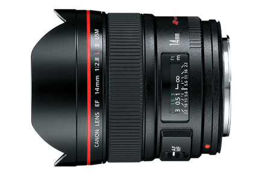

鏡頭的焦段概念
1. 何謂焦段
焦段，又稱為焦長 Focal Length。 焦段決定了一顆鏡頭『能拍攝的遠近距離』與其透視感。 焦段的定義為「感光元件至等效鏡心的距離」，焦段與拍攝距離的呈現關係如下圖：
其中： Image Distance = 像距 = 等效鏡心至感光元件的距離 Object Distance = 物距 ＝ 等效鏡心至物體的距離

焦段的特性
以下將展示不同焦段的『視角』、『可拍攝距離（物距）』的關係。
此圖為16mm、24mm、50mm、200mm之拍攝視角(Field of view)與可拍攝物距的差異比較圖。
從圖示中我們可以知道焦段的特性：
1. 越長的焦段，能拍攝的物理距離較長
2. 越長的焦段，其視角廣度越窄
3. 越長的焦段，鏡頭鏡身長度越長
鏡頭的分類
綜合以上特性，我們將焦段與鏡頭的類別區分為： 越短的焦段為越廣角的鏡頭；越長的焦段為越望遠的鏡頭 。 （此部分將於下一章節詳細敘述）
1. 魚眼：通常10mm以下
2. 超廣角：廣角端低於24mm
3. 廣角：24~50mm
4. 標準：50~135mm
5. 望遠：135mm以上



2. 看懂鏡頭上的標示
鏡頭上的焦段標示，通常會有兩種：
1. 定焦鏡：單一焦段標示 ex: 14mm
2. 變焦鏡：範圍焦段標示 ex: 24-105mm 24mm為廣角端焦段 ; 105mm為望遠端焦段
3. 如何選擇拍攝的鏡頭焦段
1. 寬廣大景用廣角鏡頭 ex: 16-35mm
2. 望遠景物用望遠鏡頭 ex: 100-400mm